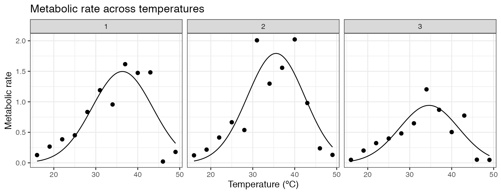
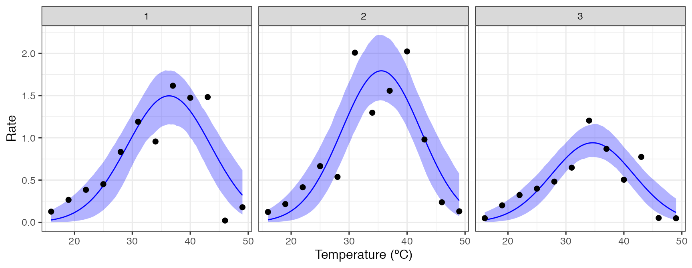
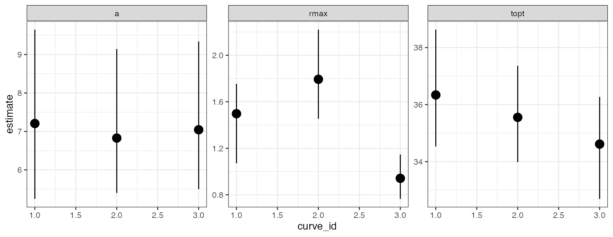
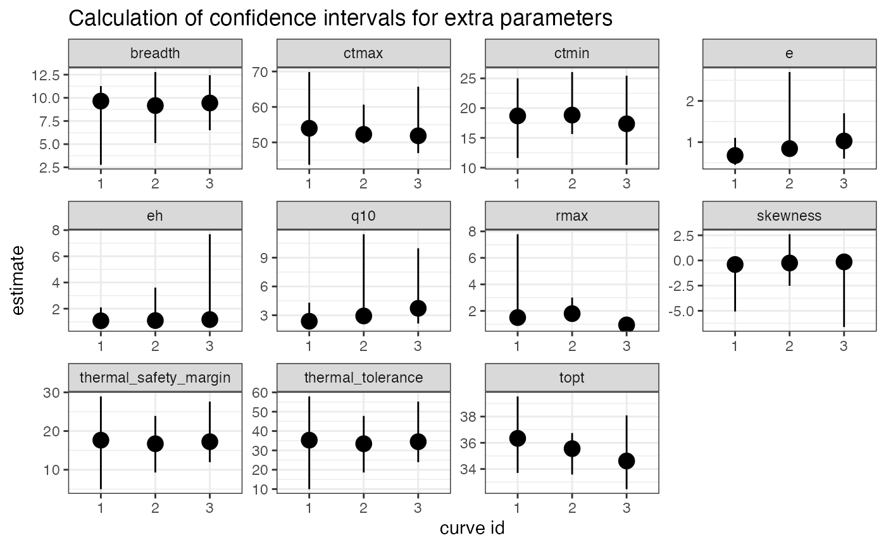

vignettes/bootstrapping_many_curves.Rmd
bootstrapping_many_curves.Rmdvignette("bootstrapping_models")
This vignette is inspired by an email I got from someone who was struggling to implement the bootstrapping approach using the package car on multiple curves. First I will demonstrate how the approach would be done using the approach of using the tidyverse and car, and how it breaks. I will fit the gaussian_1987() model to the first three curves of the chlorella_tpc dataset.
# load in data
data("chlorella_tpc")
# keep just a single curve
d <- filter(chlorella_tpc, curve_id <= 3)
# fit
d_fits <- nest(d, data = c(rate, temp)) %>%
mutate(gaussian = map(data, ~nls_multstart(rate ~ gaussian_1987(temp, rmax, topt, a),
data = .x,
iter = c(3,3,3),
start_lower = get_start_vals(.x$temp, .x$rate, model_name = 'gaussian_1987') - 1,
start_upper = get_start_vals(.x$temp, .x$rate, model_name = 'gaussian_1987') + 1,
lower = get_lower_lims(.x$temp, .x$rate, model_name = 'gaussian_1987'),
upper = get_upper_lims(.x$temp, .x$rate, model_name = 'gaussian_1987'),
supp_errors = 'Y',
convergence_count = FALSE)))
# create high resolution predictions
d_preds <- mutate(d_fits, new_data = map(data, ~tibble(temp = seq(min(.x$temp), max(.x$temp), length.out = 100)))) %>%
select(., -data) %>%
mutate(preds = map2(gaussian, new_data, ~augment(.x, newdata = .y))) %>%
select(curve_id, growth_temp, process, flux, preds) %>%
unnest(preds)
# show the data
ggplot(d, aes(temp, rate)) +
geom_point(size = 2) +
geom_line(aes(temp, .fitted), d_preds) +
theme_bw(base_size = 12) +
labs(x = 'Temperature (ºC)',
y = 'Metabolic rate',
title = 'Metabolic rate across temperatures') +
facet_wrap(~curve_id)
Using the pipeline used previously, we would extract the coefficients of each model, fun minpack.lm::nlsLM() on each one and then run car::Boot(). However, this time the output of minpack.lm::nlsLM() and car::Boot() need to be stored in the list column within d_fits.
Extracting the coefficients and refitting the models using minpack.lm::nlsLM() works fine.
# get coefs
d_fits <- mutate(d_fits, coefs = map(gaussian, coef))
# fit with nlsLM instead
d_fits <- mutate(d_fits, nls_fit = map2(data, coefs, ~nlsLM(rate ~ gaussian_1987(temp, rmax, topt, a),
data = .x,
start = .y,
lower = get_lower_lims(.x$temp, .x$rate, model_name = 'gaussian_1987'),
upper = get_upper_lims(.x$temp, .x$rate, model_name = 'gaussian_1987'))))
head(d_fits)
#> # A tibble: 3 x 8
#> curve_id growth_temp process flux data gaussian coefs nls_fit
#> <dbl> <dbl> <chr> <chr> <list> <list> <list> <list>
#> 1 1 20 acclimati… respirat… <tibble [1… <nls> <dbl [… <nls>
#> 2 2 20 acclimati… respirat… <tibble [1… <nls> <dbl [… <nls>
#> 3 3 23 acclimati… respirat… <tibble [1… <nls> <dbl [… <nls>
d_fits$nls_fit[[1]]
#> Nonlinear regression model
#> model: rate ~ gaussian_1987(temp, rmax, topt, a)
#> data: .x
#> rmax topt a
#> 1.497 36.338 7.206
#> residual sum-of-squares: 0.961
#>
#> Number of iterations to convergence: 1
#> Achieved convergence tolerance: 1.49e-08However, using car::Boot() currently gives an error.
# try and bootstrap # THIS BREAKS
d_fits <- mutate(d_fits, bootstrap = map(nls_fit, ~Boot(.x, method = 'residual')))
#> Error: Problem with `mutate()` column `bootstrap`.
#> ℹ `bootstrap = map(nls_fit, ~Boot(.x, method = "residual"))`.
#> x object '.x' not foundThe error, that the object .x cannot be found, likely means that car::Boot() is incompatible with the purrr::map() method of using list columns to store model objects and get predictions and parameter estimates. Usually I would email the creators and maintainers of car, but having already emailed them multiple times with code problems/queries when trying to get car::Boot() to work with non-linear least squares regressions, I decided to try find a not-so-painful workaround.
Instead of creating a list column with mutate() and map(), we can create an empty list column and then run a for loop to run Boot() on each model in the list column of the dataframe. We can then just place that result of Boot() into the right place of our empty list column. Because the error comes from the actual model fit, we need to run the nlsLM() model again each time. I really like this approach and have found it powerful numerous times now.
# create empty list column
d_fits <- mutate(d_fits, bootstrap = list(rep(NA, n())))
# run for loop to bootstrap each refitted model
for(i in 1:nrow(d_fits)){
temp_data <- d_fits$data[[i]]
temp_fit <- nlsLM(rate ~ gaussian_1987(temp, rmax, topt, a),
data = temp_data,
start = d_fits$coefs[[i]],
lower = get_lower_lims(temp_data$temp, temp_data$rate, model_name = 'gaussian_1987'),
upper = get_upper_lims(temp_data$temp, temp_data$rate, model_name = 'gaussian_1987'))
boot <- Boot(temp_fit, method = 'residual')
d_fits$bootstrap[[i]] <- boot
rm(list = c('temp_fit', 'temp_data', 'boot'))
}
d_fits
#> # A tibble: 3 x 9
#> curve_id growth_temp process flux data gaussian coefs nls_fit bootstrap
#> <dbl> <dbl> <chr> <chr> <list> <list> <lis> <list> <list>
#> 1 1 20 acclima… respir… <tibbl… <nls> <dbl… <nls> <boot>
#> 2 2 20 acclima… respir… <tibbl… <nls> <dbl… <nls> <boot>
#> 3 3 23 acclima… respir… <tibbl… <nls> <dbl… <nls> <boot>Voila! There is now a list column of the bootstrapped parameter estimates for each model.
It is now possible to do all the other things in the pipeline. Firstly, we can get the 95% confidence intervals around our predictions. This heavily borrows from the code from vignette("bootstrapping_models"), but is a little more laborious as we are applying it to a list column. The function defined is not the prettiest but it does exactly the same job as in vignette("bootstrapping_models").
# get the raw values of each bootstrap
d_fits <- mutate(d_fits, output_boot = map(bootstrap, function(x) x$t))
# calculate predictions with a gnarly written function
d_fits <- mutate(d_fits, preds = map2(output_boot, data, function(x, y){
temp <- as.data.frame(x) %>%
drop_na() %>%
mutate(iter = 1:n()) %>%
group_by_all() %>%
do(data.frame(temp = seq(min(y$temp), max(y$temp), length.out = 100))) %>%
ungroup() %>%
mutate(pred = gaussian_1987(temp, rmax, topt, a))
return(temp)
}))
# select, unnest and calculate 95% CIs of predictions
boot_conf_preds <- select(d_fits, curve_id, preds) %>%
unnest(preds) %>%
group_by(curve_id, temp) %>%
summarise(conf_lower = quantile(pred, 0.025),
conf_upper = quantile(pred, 0.975),
.groups = 'drop')
ggplot() +
geom_line(aes(temp, .fitted), d_preds, col = 'blue') +
geom_ribbon(aes(temp, ymin = conf_lower, ymax = conf_upper), boot_conf_preds, fill = 'blue', alpha = 0.3) +
geom_point(aes(temp, rate), d, size = 2) +
theme_bw(base_size = 12) +
labs(x = 'Temperature (ºC)',
y = 'Rate') +
facet_wrap(~curve_id)
Second, we can calculate the confidence intervals of the estimated parameters explicitly modelled in the regression.
# get tidied parameters using broom::tidy
# get confidence intervals of parameters
d_fits <- mutate(d_fits, params = map(nls_fit, broom::tidy),
cis = map(bootstrap, function(x){
temp <- confint(x, method = 'bca') %>%
as.data.frame() %>%
rename(conf_lower = 1, conf_upper = 2) %>%
rownames_to_column(., var = 'term')
return(temp)
}))
# join parameter and confidence intervals in the same dataset
left_join(select(d_fits, curve_id, growth_temp, flux, params) %>% unnest(params),
select(d_fits, curve_id, growth_temp, flux, cis) %>% unnest(cis)) %>%
ggplot(., aes(curve_id, estimate)) +
geom_point(size = 4) +
geom_linerange(aes(ymin = conf_lower, ymax = conf_upper)) +
theme_bw() +
facet_wrap(~term, scales = 'free')
#> Joining, by = c("curve_id", "growth_temp", "flux", "term")
Finally, we can redo our car::Boot() procedure, but this time use calc_params() to bootstrap confidence intervals for the extra parameters such as \(T_{opt}\) and \(r_{max}\). For reasons that I currently do not understand, Boot() and calc_params() only calculates the activation energy, deactivation energy, and q10 when using method = case not method = residual, but actually it is not recommended to bootstrap these parameters from models where they are not explicitly included in the model formula anyway.
# create empty list column
d_fits <- mutate(d_fits, ci_extra_params = list(rep(NA, n())))
# run for loop to bootstrap extra params from each model
for(i in 1:nrow(d_fits)){
temp_data <- d_fits$data[[i]]
temp_fit <- nlsLM(rate ~ gaussian_1987(temp, rmax, topt, a),
data = temp_data,
start = d_fits$coefs[[i]],
lower = get_lower_lims(temp_data$temp, temp_data$rate, model_name = 'gaussian_1987'),
upper = get_upper_lims(temp_data$temp, temp_data$rate, model_name = 'gaussian_1987'))
boot <- Boot(temp_fit, f = function(x){unlist(calc_params(x))}, labels = names(calc_params(temp_fit)), R = 20, method = 'case') %>%
confint(., method = 'bca') %>%
as.data.frame() %>%
rename(conf_lower = 1, conf_upper = 2) %>%
rownames_to_column(., var = 'param')
d_fits$ci_extra_params[[i]] <- boot
rm(list = c('temp_fit', 'temp_data', 'boot'))
}
#>
#> Number of bootstraps was 13 out of 20 attempted
#>
#> Number of bootstraps was 13 out of 20 attempted
#>
#> Number of bootstraps was 17 out of 20 attempted
# calculate extra params for each model and put in long format to begin with
d_fits <- mutate(d_fits, extra_params = map(nls_fit, function(x){calc_params(x) %>% pivot_longer(everything(), names_to = 'param', values_to = 'estimate')}))
left_join(select(d_fits, curve_id, growth_temp, flux, extra_params) %>% unnest(extra_params),
select(d_fits, curve_id, growth_temp, flux, ci_extra_params) %>% unnest(ci_extra_params)) %>%
ggplot(., aes(as.character(curve_id), estimate)) +
geom_point(size = 4) +
geom_linerange(aes(ymin = conf_lower, ymax = conf_upper)) +
theme_bw() +
labs(y = 'estimate', x = "curve id") +
facet_wrap(~param, scales = 'free') +
labs(title = 'Calculation of confidence intervals for extra parameters')
#> Joining, by = c("curve_id", "growth_temp", "flux", "param") #### Further reading